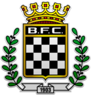

Boavista Futebol Clube (BFC)
Boavista Futebol Clube é um clube português da cidade do Porto, com sede na zona da Boavista, freguesia de Ramalde, concelho do Porto.
Venceu 1 vez
Os clubes que venceram o campeonato masculino
Boavista Futebol Clube é um clube português da cidade do Porto, com sede na zona da Boavista, freguesia de Ramalde, concelho do Porto.
Venceu 1 vez

Futebol Clube do Porto, mais conhecido como FC Porto ou simplesmente Porto, é um clube multidesportivo português sedeado na cidade do Porto.
Venceu 27 vezes

O Sport Lisboa e Benfica é um clube multidesportivo sediado na freguesia de São Domingos de Benfica, em Lisboa, Portugal.
Venceu 36 vezes

O Sporting Clube de Portugal é um clube português, eclético e multi-desportivo, fundado a 1 de julho de 1906, com sede em Lisboa no Complexo Alvalade XXI.
Venceu 18 vezes

O Clube de Futebol Os "Belenenses" é um clube português fundado em 23 de Setembro de 1919, e tem sede em Lisboa, na freguesia de Santa Maria de Belém.
Venceu 1 vez